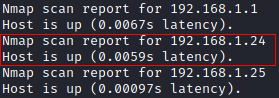
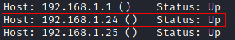

IP extraction
IP extraction
1.
nmap output on file:• normal output (-oN option)
• xml format (-oX)
• grapable format (-oG)
• normal + xml + grepable format (-oA)
nmap -PE -sn -n 192.168.1.0/24 -oN upHosts
cat upHosts
2.
regular expression to grep the Ip addresses: ◇ normal output
/^(?:Nmap scan report for )((?:\d{1,3}\.){3}\d{1,3})/  ◇ grepable format
/^(?:Host:)\s((?:\d{1,3}\.){3}\d{1,3})/ 3.
Ruby script for Normal output nmapbegin
# Input file is the first argument
File.open(ARGV[0],"r") do |file|
# ip pattern matching for each line
file.each do |line|
# =~ compares and sets RegExp global variables
/^(?:Nmap scan report for )((?:\d{1,3}\.){3}\d{1,3})/ =~ line
# if the pattern matches the line, then $1 is defined
# and contains the substring that matches the ip
# pattern group ((?:\d{1,3}\.){3}\d{1,3})
puts $1 if $1
end
end
rescue Exception => e
puts e
end
:
(?: ) syntax in the regular expression, avoids capturing the subexpression inside parentheses. They are groups and they are used to capture more than one pattern inside a string.
Therefore if we use (?: ), when we compare the entire pattern with a string, it does not capture the subexpression inside it.
4.
Execute the Ruby script on the file ruby upHostsNmap-oN.rb upHosts
5.